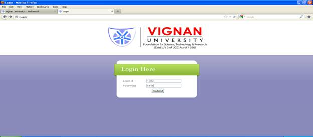
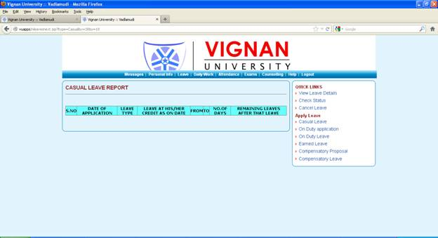
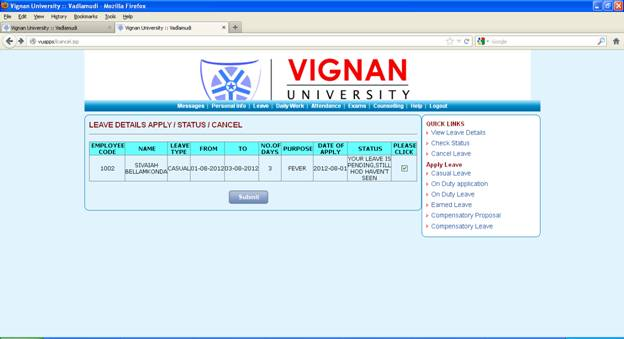
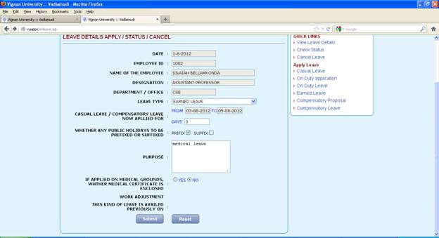
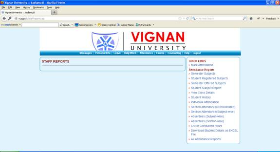

LOGIN PAGE:
This is the login page, it contains user id and password by giving the appropriate user id and password we can enter into the next page in order to do this there is a submit button in the bottom after giving the user id and password if we click the submit button we enter into next page

HOME PAGE:
After logging in we enter into the home page and the home page contains various options, home page appears as follows
CHANGE PASSWORD:
In the right side of the home page you find change password it contains 3 fields old password new password and confirm new password if u give values in that fields if u give values your password will changed
UPLOAD PHOTO:
In this page we can upload with the help of browse after browsing the url appears on the text box and by submitting u can get the photo otherwise u can rest the url by reset button
ADD ACHIEVEMENTS:
Here you can add any of your achievements by filling the appropriate fields in the page and the page appears as follows
DELETE ACHIEVMENTS:
Here you can find the list of achievements and the page appears as follows

If you click on the delete the achievement will be deleted
ADD RESEARCH:
Here you can add any of the research papers and the authors name and also date and publication media and the page appears as follows
After filling the details the next page appears as follows
After browsing the abstract if you submit then the following status page appears
LIST OF RESEARCH PAPERS SUBMITTED:
Here the list of research papers submitted appears and the page is as follows
DELETE RESEARCH:
Here you can delete your research papers by clicking on the appropriate file name and the page is as follows
If you click on the filename then it will be deleted automatically as follows
ADD PROJECT DETAILS:
Here you can add your project details like abstract etc; and the page appears as follows
If you add details and submit the success report appears at the top as follows
VIEW PROJECT DETAILS:
Here the project details of all the submitted once appears and the page is as follows
MY EXPERIENCE DETAILS:
Here the details of the particular staff appears and the page is as follows
MESSAGES:
Messages is one of the button in the home page and if you click that the page appears as follows
VIEW MESSAGES:
This link appears in the right side of the message page. Here we can see the messages that were sent to you and the page shows the text of the message and the time also
SEND MESSAGE:
This page is used to send messages to the faculty and in this page you should mention the employee list to whom you want to send the message and the subject of the message you can see the employee list by entering the name in the right side text field and the page is as follows
If you click on submit button the following page appears
SENT MESSAGES:
Here the sent messages will be appeared i,e; the messages sent by you to particular staff and the page is as follows
PERSONAL INFORMATION:
This button is available in the home page where on going to this page u can update your profile and the information will be added in the list of employees
By clicking on the submit button your profile will we updated as above all the links in the personal info are present the above
LEAVE PAGE:
This is another button that appears in the home page and it is as follows
VIEW LEAVE DETAILS:
This is the link that appears in the right side of the leave page and it is as follows
If you select the type of leave then the leave report appears as follows

LEAVE STATUS:
Here you can check the leave status that the leave is sanctioned or in pending and this page appears as follows
CANCEL LEAVE:
Here you can cancel the leave you had applied if necessary and the page contains your leave details it is as follows

If you click on the please click and then submit the following page appears
CASUAL LEAVE:
This page is meant to fill the leave details and it contains several fields and it is as follows
After clicking on submit the status appears as follows
ON DUTY LEAVE:
This page is meant to apply the leave on duty and it contains various fields as follows
If you click on submit the status appears as follows
EARNED LEAVE:
This page is meant to apply the earned leave i,e; any medical leave and the page is as follows

After filling the details if you submit the status report appears as follows
COMPENSATORY PROPOSAL:
This page is meant to keep a proposal for the sanction compensatory leave for approval and it contains the following details
By clicking on the submit button the status appears as follows
COMPENSATORY LEAVE:
This is meant for applying a compensatory leave and this page contains following details
If you submit you will get the status as follows
DAILY WORK:
This is another button in the home page and it appears as follows
ADD/UPDATE THE WORK:
This page is meant for adding and updating the work done by the faculty on particular date and it is as follows
If you click on submit the following page appears
After filling the details if you submit then the following appears (status)
DELETE WORK:
Here you can delete the work of the particular page and the page is as follows
If you submit then the following appears
Here you can select and then again if u submit then following appears
Fill the appropriate fields and you can then update as done before
CONSOLIDATED REPORT:
This gives the report of no of hours worked and it contains the following details
If you submit you get the report as follows
MY REPORT:
Here staff attendance individual report is seen the page is as follows
If you click on submit then the report appears as follows
ATTENDANCE:
In this it contains various options regarding attendance you can see the class attendance the page will appear like this

MARK ATTENDANCE:
In this you can mark the attendance of a particular batch, the page appear like this
If you click on the continue button, the page appear like this
If you click on the submit button, the page appear like this
Then click on ok, mark attendance submitted successfully
STUDENT REGISTERED SUBJECTS:
Here the students registered subjects will be appeared if you give the register number in the following page
If you submit then the report appears as follows
SEMESTER OFFERED SUBJECTS:
Here you can find the subjects offered to the students of particular branch, year, semester and the page is as follows
If you click on submit then the report appears as follows
STUDENT SUBJECT REPORT:
Here in this page if you give the details then the student subject report of the particular branch year and semester appears
If you click on submit the report appears as follows
CLASS DETAILS:
In this you can see the class details of particular batch
On clicking submit button, the page appear like this
STUDENT HISTORY:
In this you can see all the details of the particular student, the page will appear like this
If you click on the submit button the student profile will appears
INDIVIDUAL ATTENDANCE:
In this you can see the individual attendance of a student during some particular period the page will appear like this
If you click on the submit button, the page appear like this
SECTION ATTENDANCE (CONSOLIDATED):
In this you can get attendance of the section by filling appropriate details the page appear like this
On clicking submit button, the page appear like this
SECTION ATTENDANCE (SUBJECT WISE):
In this you can get section attendance by subject wise, the page appear like this
On clicking on the submit button, the apge appear like this

ABSENTEES (SUBJECT WISE):
In this you can see the subject wise absentees by selecting the appropriate details
If you click on the submit button, the subject wise absentees will appear
ABSENTEES (SECTION WISE):
In this you can see the section wise absentees, the page appear like this
On clicking on the submit button, the page appear like this
LIST OF CONDUCTED HOURS:
In this you can see the list of conducted hours, the page appear like this
On clicking on the submit button, the page appear like this
DOWNLOAD STUDENT DETAILS AS EXCEL FILE:
In this you can see the student details in excel file, the page appear like this
If you click on the submit button, the page appear like this
Then click on the ok button, you can see excel file
ALL ATTENDANCE REPORTS:
In this you can get all the attendance report the page appear as follows
EXAMS:
In this exam link it contains various options, the page appear like this
ENTER MARKS:
In this you have to enter course, branch, year, semester then you can see the marks, the page appear
On clicking on the submit button, marks will appear
SECTION MARKS (ONE SUBJECT-ONE EXAM-ONE NUMBER):
In this you can see the individual person marks, in the particular subject, the page appear like this
SECTION MARKS (ONE SUBJECT-ONE EXAM-ALL NUMBERS)
In this you can see all numbers marks on a particular subject, the page appear like this
SECTION MARKS (ONE SUBJECT-ALL EXAMS-ALL NUMBERS):
In this you can see all the exam marks of all the numbers in a particular subject, the page appear like this
SECTION MARKS (ALL SUBJECTS-ALL EXAMS-ALL NUMBERS):
In this you can see all the subject marks, the page appear like this
If you click on the submit button, it shows a file like this
If you click on ok, the excel sheet will appear
FINALIZED INTERNAL MARKS (SUBJECT WISE)
In this you can see finalized internal marks off all the subjects, the page appears like this
If you click on the submit button, the finalized subject marks will appear
EXAM STATUS:
In this you can see status of the exam by branch wise, the page appear like this
If you click on the submit button, the file appear like this
Click on the ok , it shows a excel file
COUNSELING:
In this it contains various option regarding counseling, other wise if no students are there then it shows an empty page, the page appear like this
HELP:
This is used to guide the people how to use the website and the page is as follows
SEND NOTICE:
Here this is the one of the link in the help page it is used to send the notice to the various departments and the page is as follows
If you click on the submit button the status appears as follows
The remaining links exits above
Logout:
In this by clicking on the logout option you will come out of the page, the page appear like this